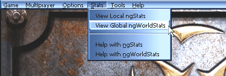
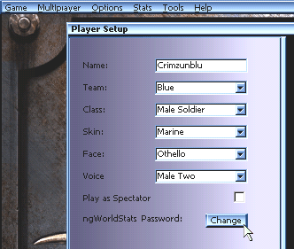
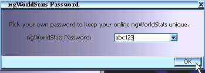
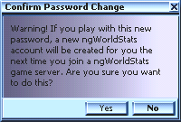

Main
Individual
Game Stats
� Last Game
� Most Recent
� The Single
Highest Scoring
Game of All Time
All-Time Stats
� All Totals
� Human Totals
� Bot Totals
� Rankings
� High Scores
� Player List
Help Using
ngStats™
ngWorldStats™ ngTCS™
About
� Epic Games
� NetGames USA


ngWorldStats™
is the online version of ngStats™ and integral
support for it is built right into Unreal Tournament! It is a freely available service
where you can get complete and total statistics from your game play on every participating
Unreal Tournament game server while playing online.
Your every kill, your every death, and even your every Med Box use will be remotely logged
to NetGames USA for
analysis and and post game presentation. You will then be able to visit the Unreal
Tournament ngWorldStats
site at:
and see a detailed breakdown of up to the last week's worth of games you played while online. You can even have Unreal Tournament directly launch your default web browser for you and take you to ngWorldStats by choosing "View Global ngWorldStats" from the Stats pull down menu from within Unreal Tournament as show below:

One of the coolest features of ngWorldStats is that all of your stats will also be accumulated into a permanent career totals database just for you, keeping track of exactly how many frags, kills, deaths and much more that you have ever accumulated while playing online.
Best of all ngWorldStats is freely available and requires no pre-registration to participate and measures for player uniqueness and security have been accounted for. All you need to do is pick a ngWorldStats password for your self in the Player Setup screen. Press the "Change" button next to the "ngWorldStats Password" line as show below:

You will be prompted with the following dialog box:

If this is the first time you have seen this dialog box the password feild
will be empty and you will need to type in a password of your choice. The "abc123'
above is just an example, be sure to pick something else :)
Keep your password to yourself and don't loose it, as no one at NetGames USA or Epic Games
knows it. Your online ngWorldStats are only as safe as you are with
your password.
IMPORTANT: If you should every re-install Unreal Tournament be sure to set your ngWorldStats password and your player Nick Name back to your desired one as part of your initial player setup. Otherwise your stats will not be kept together.
If you latter go back to change your ngWorldStats password you will be prompted with the following dialog box:

Make sure you this is what you want to do before you change your password. Here is a more thorough explanation of how ngWorldStats ngUIDs/Accounts are assigned to help you better understand if this is what you really want to do.
The first time the ngWorldStats system "sees" you, you will be assigned a ngUID (ngWorldStats User ID). You will then be able to give your ngUID to a friend for them to easily find your ngWorldStats. The key is to stick with the same Nick Name and password as anytime you change either, ngWorldStats will assign you a new ngUID, and your stats may not be able to be combined across multiple ngUID's. All of the latest information on ngWorldStats can always be found in the ngWorldStats FAQ - Frequently Asked Questions section at the Unreal Tournament ngWorldStats site:
http://UT.ngWorldStats.com/FAQ/
ngWorldStats logging must turned on by the server operator (not players) by checking it as an option when setting up an Internet Server. It is on by default but can be turned off by server operators. When looking for games that have ngWorldStats turned on use the built in game browser in Unreal Tournament as it will tell you if ngWorldStats is "Enabled". Also, practice matches and Single Player games are not able to use ngWorldStats, rather they must use ngStats.
If you run a web page for your Internet server and would like to let everyone know it is ngWorldStats
Enabled please feel free to use any of the following GIF images with URLs on your web
page:
234x46 - Large Button
88x31 - Micro Button
Be sure to check the ngWorldStats
web site for all the latest general information about ngWorldStats
and its terms of use.
Main
Individual Game Stats: | Last
Game | Most Recent | Highest Scoring
All-Time Stats: | All Totals | Human Totals | Bot Totals | Rankings
High Scores | Player List
Help Using ngStats™ | ngWorldStats™ | ngTCS™

�1999 NetGames USA, Inc. All rights reserved
Trademark information. View the terms under which ngStats is provided to you.